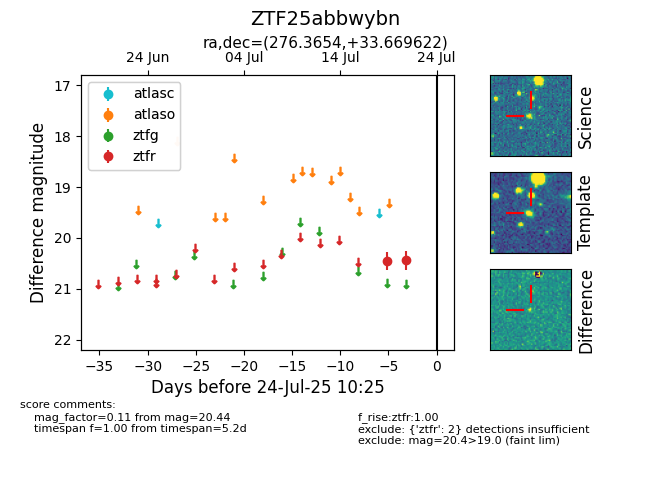

Target ZTF25abbwybn at 2025-07-24 10:25, see:
FINK: fink-portal.org/ZTF25abbwybn
Lasair: lasair-ztf.lsst.ac.uk/objects/ZTF25abbwybn
ALeRCE: alerce.online/object/ZTF25abbwybn
alt names
ZTF25abbwybn (ztf,fink)
coordinates:
equatorial (ra, dec) = (276.3654,+33.66962)
galactic (l, b) = (61.5130,+19.66816)
photometry
last ztfr=20.44
2 ztfr detections
